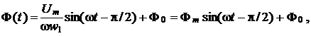
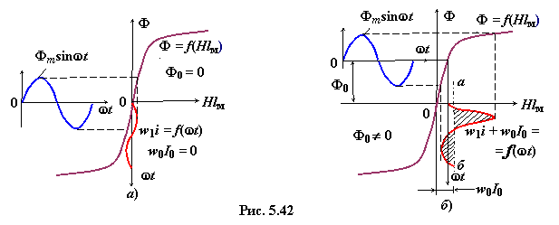

5.5.1.1. Электромагнитные процессы в управляемом дросселе
Если пренебречь относительно небольшим активным сопротивлением обмотки w1 и потерями энергии в сердечнике, то синусоидальное напряжение u уравновешивает ЭДС самоиндукции, взятой с обратным знаком:
Отсюда магнитный поток

где Фm = Um / (ωw1) – амплитуда переменной составляющей магнитного потока; Ф0 – постоянная составляющая переменного потока.
Принцип управления переменным током i путём изменения постоянного тока I0 в обмотке w0 поясним с помощью рис. 5.42а и рис. 5.42б, где кривые Ф(Нlм) представляют собой зависимости потока в сердечнике от суммарной МДС (магнитного напряжения)
Нlм = H1мlм + H0lм = F = w1I + w0I0.

Построения на рис. 5.42а соответствуют случаю, когда I0 = 0 (Ф0 = 0), а на рис. 5.42б – когда I0 ≠ 0 (Ф0 ≠ 0). На обоих рисунках переменная составляющая потока Фmsinωt одинаковая. Кривые F = Hlм = w1i + w0I0 = ƒ(wt) построены с учётом значения Ф0. Ось времени для этих кривых направлена вертикально вниз. Ток i не содержит постоянной составляющей, так как в цепи обмотки w1 нет источника постоянной ЭДС и выпрямителей.
Проведём прямую а−б (рис. 5.42б) так, чтобы
среднее значение тока i за период от ωt = 0 до ωt = 2π было равно нулю, т.е. чтобы заштрихованные площади кривой ω1i левее и правее этой оси были одинаковыми. Прямая а−б является нулевой линией для кривой w1i = ƒ(ωt) и удалена от оси ординат на расстояние F0 = w0I0.
Анализ кривых w1i показывает, что при Ф0 ≠ 0 кривая переменного тока несимметрична относительно оси времени, содержит первую и высшие гармоники,
амплитуды которых зависят как от амплитуды Фm, так и от постоянной МДС F0 = w0I0: чем больше w0I0, тем больше амплитуды гармоник тока i: первой I1m = H1mlм / w1, второй I2m = H2mlm / w1 и т. д.